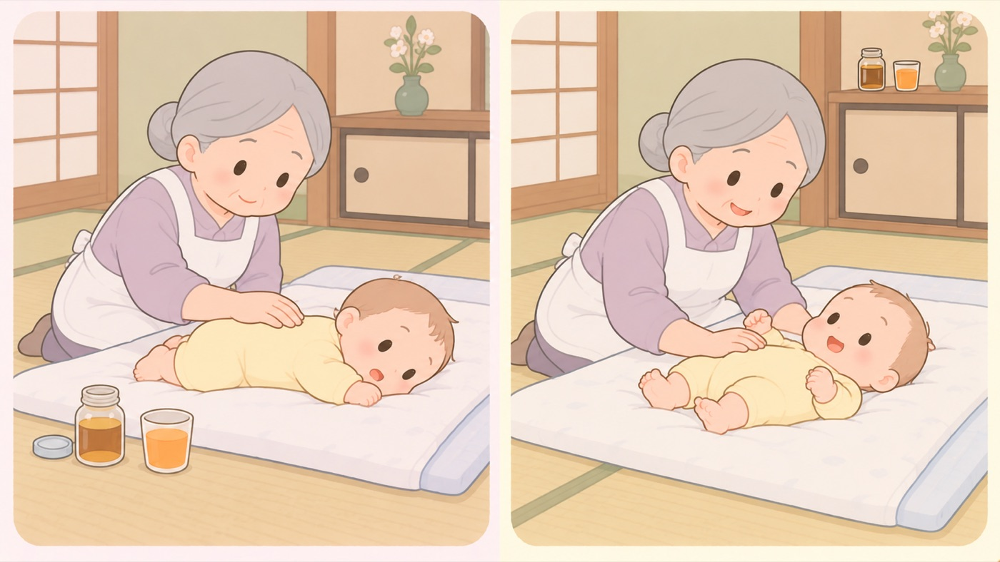

はじめに
親や友人に教わったことが、古くなっていないか
変わった年がわかるものだけを並べた。古い言い伝えが正しいこともあるので、いまの指針で確かめる
自分の親や、少し上の友人に教わったやり方は、その人が子育てをした当時の常識です。そのあいだに指針が変わったものがあります。ここでは、変わった年が公的な資料で確かめられるものだけを挙げます。言い伝えを否定するためではなく、どれが更新されたのかを一度見ておくためのものです。

左は危険な例、右は安全な例です。- すること：「いつの話か」を聞いてみる
教えてくれた人が子育てをした時期が分かると、どの指針の時代かの見当がつきます。上の一覧の年より前なら、更新されている可能性があります。責めるためではなく、確かめるためです。 - すること：言い伝えのほうが正しいこともある、と知っておく
おしゃぶりで歯並びに影響が出るという話は、俗説ではありません。小児科と小児歯科の保健検討委員会は、おしゃぶりを使っている子は上顎前突・開咬・乳臼歯交叉咬合の発現率が極めて高いとしています。ただし2歳頃までにやめれば発育とともに改善するともしています。くわしくは7〜11か月タブにまとめました。 - しないこと：公的機関が言っていないことを、言ったことにしない
「昔はこうだったが、いまは違う」と書かれた記事のうち、公的機関が実際にそう言っているものは一部です。たとえばベビーパウダーを「いまは勧めない」と明記した公的資料は見当たりません。日光浴から外気浴日に当てることを目的とせず、日陰や朝夕に外の空気へ触れさせること。かつての「日光浴」に代わる考え方。への変更も、よく言われる年を公的資料で裏づけられませんでした。このサイトでは、年を書けるものだけ年を書いています。 - すること：このサイトの各項目も、いつの情報かを見る
ページの上に、本文を確かめた日を出しています。公的機関のページは、URLが変わらないまま中身が差し替わることがあります。気になる点は、各項目の「この項目の根拠」から出典に当たってください。
0歳のはじめに関わるもの
- 寝かせ方 … あおむけ。厚生労働省が1999年度から 乳幼児突然死症候群の対策強化月間を始め、重点的に呼びかけています。 月間の開始以降、この病気で亡くなる赤ちゃんは半数以下に減っています。 医学上の理由で医師にうつぶせ寝を勧められている場合を除きます
- はちみつ … 1歳を過ぎるまで与えません。 厚生省が注意を呼びかける通知を出したのは1987年10月です。 それ以前に子育てをした人は、この注意を聞いていないことがあります
- 離乳前の果汁 … 栄養学的な意義は認められていません。 「授乳・離乳の支援ガイド」に書かれたのは2007年です。 それ以前は、離乳の準備として果汁を与える指導が行われていました
- 乳児の心肺蘇生 … 胸骨圧迫心臓が止まったときに、胸の中央を繰り返し押して血液を送り出す手当て。心臓マッサージとも呼ばれる。は指2本ではなく 片手の手のひらの付け根、押す場所は 「両乳頭を結ぶ線の少し足側」ではなく胸の真ん中です。 2025年の指針の改訂で変わりました。 数年前に講習を受けた人の記憶のほうが古くなっています
この項目の根拠
- 11月は「乳幼児突然死症候群（SIDS）」の対策強化月間です（厚生労働省 政策レポート）（新しいタブで開きます）
平成11年度から11月を乳幼児突然死症候群の対策強化月間と定め、重点的な普及啓発活動を実施していること。対策強化月間を開始した平成11年度以降、この病気で亡くなる赤ちゃんの人数が半数以下に減少していること。うつぶせ寝があおむけ寝に比べて発症率が高いという研究結果が出ており、医学上の理由で必要なとき以外はあおむけに寝かせること。 - 1歳未満の乳児に蜂蜜を与えないでください（東京都・PDF）（新しいタブで開きます）
1987年（昭和62年）10月に当時の厚生省が注意を呼びかける通知を出し、その後、蜂蜜を原因とする事例は減少したこと。 - 授乳・離乳の支援ガイド 離乳編（平成19年3月14日・厚生労働省・PDF）（新しいタブで開きます）
平成19年3月の「授乳・離乳の支援ガイド」で、離乳の開始前に果汁を与えることについて、乳汁の摂取量が減少すること、たんぱく質・脂質・ビタミン類やミネラル類の摂取量低下が危惧されることなどから、栄養学的な意義は認められないとされたこと。 - 授乳・離乳の支援ガイド（2019年改定版・こども家庭庁・PDF）（新しいタブで開きます）
2019年改定版でも、離乳の開始前に果汁やイオン飲料を与えることの栄養学的な意義は認められないとされていること。 - 「救急蘇生法の指針2025（市民用）」への対応について（令和8年10月23日・消防救第385号・総務省消防庁・PDF）（新しいタブで開きます）
乳児の胸骨圧迫が2本指ではなく片手の手のひらの付け根で行うこととされ、圧迫部位が「両乳頭を結ぶ線の少し足側」から「胸の真ん中（左右の乳頭を結ぶ線の真ん中あたり）」に変更されたこと。 - おしゃぶりについての考え方（小児科と小児歯科の保健検討委員会・日本小児歯科学会・PDF）（新しいタブで開きます）
おしゃぶりを使用している子どもは、使用していない小児と比較して上顎前突、開咬および乳臼歯交叉咬合の発現率が極めて高いこと。噛み合わせの異常は2歳頃までに使用を中止すれば発育とともに改善されること。